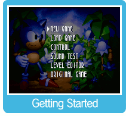

Sonic™ 3D Blast Director's Cut is an update to the original 1996 game, released in December 2017 by Jon Burton, the game's original lead developer. This version of the game makes slight tweaks to gameplay and adds new features, such as a between-levels menu screen and a time challenge mode. For more information, visit the GameHut channel on YouTube.
Press  at the Title Screen to display the Option menu of this game. Press at the Title Screen to display the Option menu of this game. Press  up/down to select one of the six options, and press to confirm. In the Sound Test, use left/right to change the track number, and press or ( up/down to select one of the six options, and press to confirm. In the Sound Test, use left/right to change the track number, and press or ( or or  for Classic Controller) to play it. To stop the music, press ( for Classic Controller) to play it. To stop the music, press ( for Classic Controller). for Classic Controller).
NEW GAME: Begin a new game.
LOAD GAME: Enter a password to resume from a prior session.
CONTROL: Switch button assignments. Press any button to change assignments.
* Note that Buttons A, B, C refer to the Genesis controller buttons.
SOUND TEST: Listen to music and sound effects of this game.
LEVEL EDITOR: Access the in-game level editor used by the game's developers to help create stages.
ORIGINAL GAME: Start the original game, without applying any of the changes made for the Director's Cut.
The prologue scene will play when you start your game. Press or ( or for Classic Controller) to view the next scene. To skip this sequence entirely, press and start from Zone 1.
|